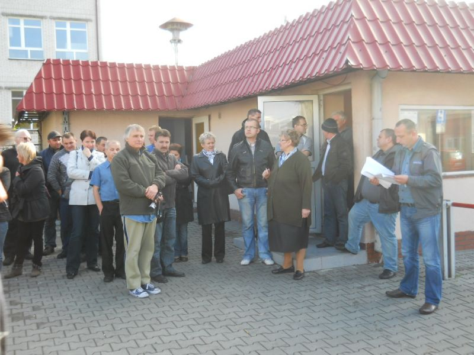

Welkom op TimafluOnline.
Als medewerker van Timaflu hebt u toegang op deze site. Sommige websitefuncties zijn opengesteld voor alleen uw afdeling.
Op de navigatiebalk kunt u uitloggen als u op de uitknop klikt. U kunt naar uw profiel toegaan en daar wijzigingen maken. En via het "huisicoon" kunt u teruggaan naar deze pagina.
